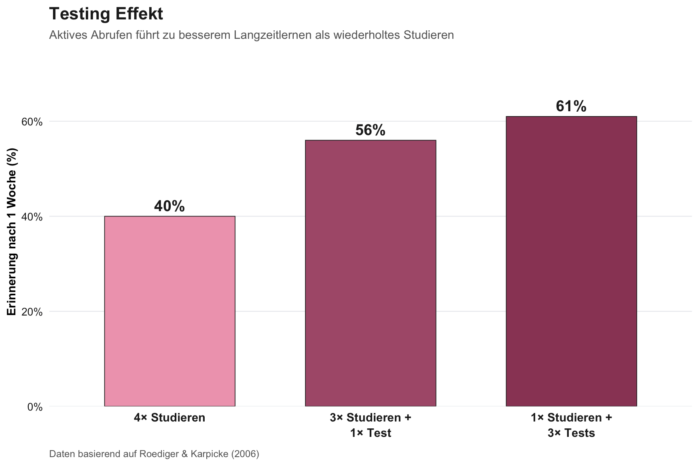

Die Seite enthält Abrufübungen. Nutze diese, denn aktives Erinnern ist wirksamer als Weiterlesen.
Zentrale Erkenntnisse
Gedächtnis ist kein Aufnahmegerät, sondern ein rekonstruktiver Prozess, der Informationen bei jeder Stufe transformiert
Deklaratives und prozedurales Wissen folgen unterschiedlichen Regeln und erfordern unterschiedliche Instruktionsansätze
Der Übergang von episodischem zu semantischem Wissen erfordert aktive, variierende Begegnungen und geschieht nicht von allein
Abruf erzeugt Lernen, nicht nur misst es. Das ist der wirksamste verfügbare Lernmechanismus
Was sich leicht anfühlt, produziert oft schwaches Lernen: Spacing, Interleaving und Generation fühlen sich schwieriger an, produzieren aber dauerhafteres Wissen
Missverständnisse kann man nicht durch korrektes Präsentieren überschreiben, weil Schemas neue Information still umschreiben
Gedächtnis ist nicht ein System
Die grundlegendste Einsicht der Gedächtnisforschung: Was wir beiläufig “Gedächtnis” nennen, ist eine Sammlung verschiedener Systeme, die nach unterschiedlichen Regeln arbeiten, verschiedene Arten von Information speichern und unterschiedliche Implikationen für die Lehre haben.
Deklaratives Gedächtnis: Wissen, dass
Deklaratives Gedächtnis speichert Information, auf die man bewusst zugreifen und die man verbal beschreiben kann. Es gibt zwei Formen:
Episodisches Gedächtnis speichert persönlich erlebte Ereignisse, gebunden an einen bestimmten Zeitpunkt und Ort. Wenn Studierende sich an deine Vorlesung erinnern, also den Raum, die Folie, das Beispiel, dann ist das episodisches Gedächtnis. Es ist reichhaltig, kontextgebunden und inhärent an die Umstände der Enkodierung geknüpft.
Semantisches Gedächtnis speichert dekontextualisiertes Wissen: Fakten, Konzepte, Prinzipien, Kategorien. Wenn Studierende wissen, dass Mitochondrien die Kraftwerke der Zelle sind, ohne sich zu erinnern, wo sie das gelernt haben, dann ist das semantisches Gedächtnis. Es ist abstrakt, flexibel und (idealerweise) über Kontexte hinweg transferierbar.
Prozedurales Gedächtnis: Wissen, wie
Prozedurales Gedächtnis speichert Fähigkeiten und Abläufe, also Dinge, die man tun kann, aber möglicherweise nicht erklären kann. Studierende, die Differentialgleichungen flüssig lösen, aber Mühe haben, die Regeln zu artikulieren, operieren aus dem prozeduralen Gedächtnis.
Lehrimplikation: Man kann niemandem eine Fertigkeit erklären, und man kann niemandem konzeptuelles Verständnis antrainieren. Die meisten Hochschulkurse brauchen beides, und das Versäumnis, beides zu unterscheiden, erklärt eine häufige Frustration: Studierende, die die Theorie erklären können, aber sie nicht anwenden, oder die Prozeduren befolgen können, aber nicht verstehen, warum sie funktionieren.
ReflectSelbsttest: Gedächtnissysteme
Ohne zurückzuschauen: Ordne diese Beispiele dem richtigen Gedächtnissystem zu:
Ein Student erinnert sich, dass die Vorlesung am Dienstag in Raum 204 stattfand
Eine Studentin weiss, dass F = ma gilt
Ein Student kann automatisch Gleichungen umformen, ohne die Regeln bewusst abrufen zu müssen
Einer der wichtigsten Prozesse beim Lernen ist die Entwicklung von stark episodischen Erinnerungen zu semantischem Wissen, also vom Erinnern einer bestimmten Erfahrung zum Besitz abstrakten, transferierbaren Verständnisses.
Von episodischer Enkodierung zu semantischem Wissen
Wenn Studierende zum ersten Mal neues Material begegnen, sind ihre Erinnerungen stark episodisch: gebunden an den spezifischen Kontext des Lernens. Sie erinnern sich an die Vorlesung, das Beispiel, die Folie. Mit der Zeit und mit variierten Erfahrungen wird Wissen allmählich dekontextualisiert, es löst sich von spezifischen Episoden und wird Teil der allgemeinen Wissensstruktur.
Wichtig: Dies ist eine Vereinfachung. Die Beziehung zwischen episodischem und semantischem Gedächtnis ist bidirektional und fortlaufend, kein einfacher Einweg-Prozess. Episodische Spuren können bestehen bleiben, auch wenn sich semantisches Wissen entwickelt, und semantisches Wissen kann die episodische Enkodierung verbessern. Die praktische Implikation bleibt: Variierende Begegnungen und aktiver Abruf unterstützen die Entwicklung dekontextualisierten, transferierbaren Wissens.
Beispiel: “Regression”
Anfangs (episodisch): “Dienstagvorlesung, Raum 204, das Gewicht-Grösse-Beispiel, Folie mit rotem Streudiagramm, sass neben Emma”
Später (semantisch): “Passt eine Gerade an Datenpunkte an, minimiert quadrierte Residuen, wird für Vorhersagen verwendet, setzt lineare Beziehung voraus, verbunden mit Korrelation und GLM”
Dieser Übergang geschieht nicht automatisch. Er erfordert:
Mehrfache Begegnungen in verschiedenen Kontexten (nicht nur dieselben Notizen nochmals lesen)
Variierende Beispiele, die hervorheben, was wesentlich und was nebensächlich ist
Aktiven Abruf, der Rekonstruktion erzwingt statt nur Wiedererkennung
Abstraktion, also explizites Identifizieren der Tiefenstruktur über Beispiele hinweg
Encoding Specificity und das Transfer-Problem
Endel Tulvings Encoding-Specificity-Prinzip(2002) besagt: Gedächtnisabruf ist am effektivsten, wenn der Abrufkontext mit dem Enkodierungskontext übereinstimmt. Dies ist einer der am besten gesicherten Befunde der Gedächtnisforschung, und er hat eine weitreichende Implikation für die Lehre:
Studierende “wissen” oft etwas im Kontext, in dem sie es gelernt haben, können aber in einem anderen Kontext nicht darauf zugreifen.
Das erklärt, warum Studierende bei Hausaufgaben, die Vorlesungsbeispielen ähneln, gut abschneiden, aber bei Prüfungen scheitern, die die Anwendung derselben Konzepte in neuen Kontexten erfordern. Das Wissen ist da, aber der Abrufpfad ist kontextabhängig.
Lehrimplikation: Um transferierbares Wissen aufzubauen, musst du bewusst die Kontexte variieren, in denen Studierende Konzepte begegnen und üben. Verschiedene Beispiele, verschiedene Oberflächenmerkmale, verschiedene Aufgabenformate verwenden. Jeder neue Kontext schafft zusätzliche Abrufpfade. Das ist auch ein starkes Argument für Interleaving, also das Mischen verschiedener Aufgabentypen statt ihrer Blockung, weil Interleaving Studierende zwingt, die Auswahl des richtigen Wissens zu üben, nicht nur dessen Ausführung.
ReflectAnwendung: Transfer in deiner Lehre
Denke an eine Prüfungsfrage, bei der viele Studierende überraschend schlecht abschneiden, obwohl das Material “behandelt” wurde:
In wie vielen verschiedenen Kontexten haben Studierende dieses Konzept geübt?
Wie ähnlich waren die Übungsaufgaben den Prüfungsaufgaben (Oberflächenmerkmale, nicht nur Tiefenstruktur)?
Was könntest du ändern, um mehr Transferpfade zu schaffen?
Gedächtnis ist rekonstruktiv
Vielleicht der kontraintuitivste Befund der Gedächtniswissenschaft (Schacter 2012): Gedächtnis ist nicht reproduktiv, es ist rekonstruktiv. Wenn man sich an etwas erinnert, spielt man keine Aufnahme ab, sondern rekonstruiert eine Erfahrung aus gespeicherten Fragmenten, ergänzt durch Vorwissen, aktuelle Überzeugungen und kontextuelle Hinweise.
Schemas: Das zweischneidige Schwert
Schemas, also organisierte Wissensstrukturen, die aus Erfahrung aufgebaut werden, sind gleichzeitig der grösste Vorteil des Gedächtnisses und seine systematischste Fehlerquelle.
Vorteile von Schemas:
Fehlende Details werden korrekt ergänzt
Neue Information wird organisiert
Schnelles Verstehen wird ermöglicht
Inferenz und Vorhersage werden unterstützt
Kosten von Schemas:
Dinge werden ergänzt, die nicht da waren
Erinnerungen werden an Erwartungen angepasst (verzerrt)
Schema-inkonsistente Information wird schlecht erinnert
Falsches Vertrauen in rekonstruierte Details
Beispiel: Studierende hören von einem Experiment mit “Kontrollgruppe” und “Interventionsgruppe”. Schema-konsistentes Detail (gut erinnert): “Die Interventionsgruppe erhielt die Behandlung.” Schema-fabriziertes Detail (fälschlich erinnert): “Die Teilnehmenden wurden randomisiert zugewiesen”, obwohl das nie gesagt wurde, weil das Schema es erwartet.
Lehrimplikation: Studierende werden neue Information systematisch an ihre bestehenden Schemas anpassen. Das ist keine Nachlässigkeit, so funktioniert Gedächtnis. Einfach korrekte Information zu präsentieren reicht oft nicht; du musst das Missverständnis explizit aktivieren, kognitiven Konflikt erzeugen und dann auflösen.
Activate — Conflict — Resolve
Wenn Studierende falsche Vorstellungen mitbringen, versagt die einfache Korrektur. Schemas schreiben die neue Information still um, um zum bestehenden Verständnis zu passen.
Beispiel: Student glaubt “Schwerere Objekte fallen schneller”. Dozent präsentiert: “Alle Objekte fallen im Vakuum gleich schnell.” Schema schreibt um: “Also ist der Unterschied im Vakuum kleiner.” Falsch, das Missverständnis überlebt.
Die Lösung:
Aktivieren: Mache das Missverständnis explizit. Bitte Studierende, sich auf eine Vorhersage festzulegen.
Konflikt: Zeige Evidenz, die das Missverständnis nicht erklären kann.
Auflösen: Präsentiere die korrekte Erklärung im direkten Kontrast zum Missverständnis.
ReflectMissverständnisse in deinem Fach
Nenne ein häufiges Missverständnis in deinem Fachgebiet:
Wie äussert es sich bei Studierenden?
Hast du bisher versucht, es durch Präsentation der korrekten Information zu korrigieren?
Wie könntest du stattdessen die Activate-Conflict-Resolve-Strategie einsetzen?
Konsolidierung: Gedächtnis verändert sich nach der Enkodierung
Enkodierung ist nicht das Ende der Geschichte. Nach dem initialen Lernen durchlaufen Erinnerungen einen langwierigen Prozess der Konsolidierung, bei dem sie über Stunden, Tage und Wochen schrittweise reorganisiert, verstärkt und mit bestehendem Wissen integriert werden.
Zentrale Konsolidierungsprinzipien
Schlaf konsolidiert Erinnerungen. Im Schlaf werden kürzlich enkodierte Erinnerungen reaktiviert und mit bestehenden Wissensstrukturen integriert. Schlaf scheint bevorzugt den Kern des gelernten Materials zu konsolidieren, also die zugrundeliegenden Muster und Regeln, eher als Oberflächendetails. (Dies ist stärker belegt für neutrales deklaratives Material; Schlaf kann unter bestimmten Bedingungen, besonders bei emotionalem Material, auch spezifische Details konsolidieren.) Lernen, das über mehrere Tage verteilt wird (mit Schlaf zwischen den Sitzungen), produziert qualitativ anderes Gedächtnis als dieselbe Lernmenge in einer einzigen Sitzung.
Erinnerungen werden stabiler, aber weniger detailliert. Frisch enkodierte Erinnerungen sind reich an Details, aber fragil. Mit fortschreitender Konsolidierung werden Erinnerungen stabiler und abstrakter: Der Kern bleibt erhalten, die Details verblassen. Das ist kein Fehler; es ist ein Feature. Abstraktion ist das, was Wissen transferierbar macht.
Abruf während der Konsolidierung verstärkt Erinnerungen. Abruf während des Konsolidierungsfensters testet nicht nur das Gedächtnis, sondern verstärkt und stabilisiert aktiv die Gedächtnisspur. Deshalb ist verteilte Abrufpraxis so effektiv: Jedes Abrufereignis gibt der Erinnerung eine weitere Gelegenheit, stabilisiert und integriert zu werden.
Lehrimplikation: Die Struktur deines Kurses über die Zeit ist genauso wichtig wie der Inhalt einzelner Sitzungen. Lernen auf mehrere Sitzungen mit Schlaf dazwischen verteilen, Abrufgelegenheiten einbauen, die Tage und Wochen überspannen, und Schlüsselkonzepte in wachsenden Abständen wieder aufgreifen: All das nutzt Konsolidierung, um dauerhafteres, integrierteres, transferierbareres Wissen zu produzieren.
Gestaffelter Abrufzeitplan
Ein bewährtes Prinzip für die Kursgestaltung:
Woche: 1 2 3 4 5 6 7 8 9 10 11 12
A: * R . R . . . R . . . R
B: . * R . R . . . R . . R
C: . . * R . R . . . R . R
* = Vermitteln R = Abrufen Abstände wachsen über die Zeit
Jeder Abruf beinhaltet teilweises Vergessen → anstrengungsreiches Erinnern → Restabilisierung. Die Abstände wachsen, weil jeder erfolgreiche Abruf die Spur dauerhafter macht.
Hinweis: Der optimale Spacing-Zeitplan wird diskutiert; einige Studien finden, dass gleichmässige Abstände vergleichbar wirksam sind. Der wichtigste Faktor ist, dass Spacing überhaupt stattfindet.
Abruf ist ein Lernereignis
Dies ist möglicherweise der wichtigste Befund für die Hochschullehre der letzten 30 Jahre (Roediger und Butler 2011): Abruf von Information aus dem Gedächtnis misst nicht nur Lernen, er erzeugt Lernen.
Der Testing Effect
Hunderte von Studien haben gezeigt: Die Handlung des Abrufens, also eine Frage beantworten, eine Antwort generieren, ein Problem aus dem Gedächtnis lösen, verstärkt die Gedächtnisspur wirksamer als erneutes Studieren desselben Materials.
Exakte Werte variieren über Studien hinweg, aber das Muster ist robust: Das Ersetzen von Wiederlesen durch Abrufpraxis verbessert die Langzeitretention substanziell.
── Attaching core tidyverse packages ──────────────────────── tidyverse 2.0.0 ──
✔ dplyr 1.1.4 ✔ readr 2.1.6
✔ forcats 1.0.1 ✔ stringr 1.6.0
✔ ggplot2 4.0.1 ✔ tibble 3.3.1
✔ lubridate 1.9.4 ✔ tidyr 1.3.2
✔ purrr 1.2.1
── Conflicts ────────────────────────────────────────── tidyverse_conflicts() ──
✖ dplyr::filter() masks stats::filter()
✖ dplyr::lag() masks stats::lag()
ℹ Use the conflicted package (<http://conflicted.r-lib.org/>) to force all conflicts to become errors
Loading required package: sysfonts
Loading required package: showtextdb

Abbildung 1: Daten basierend auf Roediger & Karpicke (2006). Wiederholtes Testen führt zu deutlich besserer Langzeiterinnerung als wiederholtes Studieren.
Abruf identifiziert Lücken. Wenn Studierende versuchen abzurufen und scheitern, entdecken sie, was sie nicht wissen. Beim Wiederlesen fühlt sich alles vertraut an.
Abruf fördert Elaboration. Der Aufwand der Rekonstruktion aktiviert verwandtes Wissen und erzeugt reichhaltigere, vernetztere Repräsentationen.
Abruf aktualisiert den Kontext. Jedes Abrufereignis enkodiert einen neuen Kontext, der mit der Erinnerung assoziiert wird, und macht sie aus mehr Situationen abrufbar (adressiert das Transfer-Problem).
Abrufpraxis ≠ Prüfung
Das reframed die Rolle von Tests in der Lehre. Traditionelle Sicht: Tests messen, was Studierende gelernt haben. Evidenzbasierte Sicht: Tests sind ein Lernwerkzeug, und ihr Wert liegt nicht primär in der Note, sondern in der Abrufpraxis, die sie bieten.
Praktische Umsetzung:
Jede Sitzung mit Fragen zum vorherigen Material beginnen
In-Class-Polling oder Antwortsysteme nutzen
Übungsaufgaben stellen, die Abruf erfordern, nicht nur Wiedererkennung
Studierende ermutigen, sich selbst zu testen statt wiederzulesen
Antwortschlüssel oder Feedback bereitstellen, damit Abruffehler korrigiert werden
Die Abrufversuche müssen nicht benotet werden, um wirksam zu sein. Was zählt, ist der Akt des Abrufens selbst.
ReflectSelbsttest: Testing Effect
Ohne zurückzuschauen:
Um wie viel Prozent verbessert sich die Erinnerung ungefähr, wenn Wiederlesen durch Abrufpraxis ersetzt wird?
Nenne drei Gründe, warum Abrufpraxis funktioniert.
Muss Abrufpraxis benotet werden, um wirksam zu sein?
Vergleiche anschliessend. Wo lagst du richtig?
Wünschenswerte Schwierigkeiten: Wenn schwieriger besser ist
Robert Bjorks Konzept der Desirable Difficulties(Bjork und Bjork 2011) ist eines der wichtigsten und kontraintuitivsten Prinzipien der Lernforschung. Es stellt eine tief verwurzelte Annahme in Frage: dass Bedingungen, die die beste Leistung während des Lernens erzeugen, auch die beste langfristige Retention und den besten Transfer produzieren.
Diese Unterscheidung ist kritisch, weil Studierende und Dozierende ihr eigenes Lernen systematisch falsch einschätzen. Bedingungen, die sich flüssig und produktiv anfühlen, erzeugen eine Illusion des Lernens.
Abbildung 2: Das Lernparadox: Subjektives Gefühl und tatsächliches Lernen können in unterschiedliche Richtungen weisen. Die metakognitive Falle liegt im unteren rechten Quadranten.
Die drei Schlüsselstrategien
1. Spacing (Verteiltes Lernen)
Lerneinheiten über die Zeit verteilen statt zusammenpressen. Derselbe Zeitaufwand, aber dramatisch unterschiedliche Ergebnisse.
Warum es funktioniert: Jede verteilte Sitzung beinhaltet partielles Vergessen, gefolgt von anstrengungsreichem Abruf, der die Erinnerung verstärkt. Massed Learning erlaubt Aufrechterhaltung im Arbeitsgedächtnis ohne Abruf aus dem Langzeitgedächtnis. Das fühlt sich leicht an, umgeht aber die Mechanismen, die dauerhafte Enkodierung erzeugen. Zusätzlich ermöglicht Spacing Konsolidierung zwischen den Sitzungen.
2. Interleaving (Abwechslung)
Verschiedene Aufgabentypen während der Übung mischen statt blockweise üben.
Warum es funktioniert: Blocking fühlt sich produktiver an, weil Studierende in einen Rhythmus kommen. Aber Interleaving zwingt Studierende, die Unterscheidung zwischen Aufgabentypen zu üben, eine Fähigkeit, die sie in Prüfungen und im echten Leben brauchen, aber unter Blocking-Bedingungen nie üben.
Hinweis: Interleaving ist am wirksamsten, wenn Kategorien oder Aufgabentypen leicht miteinander verwechselt werden können; der Vorteil ist kleiner für stark verschiedene Kategorien.
3. Generation (Generierungseffekt)
Eine Antwort generieren, bevor man sie gezeigt bekommt, selbst wenn die generierte Antwort falsch ist, verbessert das anschliessende Lernen der korrekten Antwort.
Warum es funktioniert: Der Versuch, eine Antwort zu generieren, aktiviert relevantes Wissen, erzeugt einen Kontext der Neugierde und macht die spätere Antwort einprägsamer, besonders wenn sie der Vorhersage widerspricht (der “Hypercorrection Effect”: Fehler mit hohem Vertrauen werden nach Korrektur besser erinnert als Fehler mit niedrigem Vertrauen).
Wann sind Schwierigkeiten “wünschenswert”?
Nicht jede Schwierigkeit ist wünschenswert. Eine Schwierigkeit ist wünschenswert, wenn sie produktive kognitive Verarbeitung auslöst. Sie ist nicht wünschenswert, wenn sie nur Verwirrung erzeugt oder das Arbeitsgedächtnis überlastet, ohne das Lernen voranzubringen.
Entscheidende Bedingung: Studierende müssen genug Vorwissen haben, um sich produktiv mit der Schwierigkeit auseinanderzusetzen.
ReflectAnwendung: Wünschenswerte Schwierigkeiten in deinem Kurs
Analysiere einen deiner Kurse:
Wo setzen Studierende hauptsächlich Wiederlesen ein? Wie könntest du Abrufpraxis einbauen?
Üben Studierende Aufgabentypen blockweise? Könntest du Interleaving einführen?
Gibt es Stellen, an denen Studierende Antworten empfangen, bevor sie selbst versucht haben? Wie könntest du den Generierungseffekt nutzen?
Identifiziere eine konkrete Änderung, die du umsetzen könntest.
Studierenden beibringen, wie Lernen funktioniert
Die Standard-Lernstrategien der Studierenden sind kontraproduktiv, weil sie Vertrautheit mit Lernen verwechseln(vgl. Dunlosky u. a. 2013).
Was Studierende tun
Was tatsächlich funktioniert
Notizen wiederlesen (Wiedererkennung)
Sich selbst aus dem Gedächtnis testen (Abruf)
Text markieren (Illusion von Engagement)
In eigenen Worten erklären (Elaboration)
Ein Thema zur Zeit lernen (Blocking)
Themen mischen (Interleaving)
Vor der Prüfung pauken (Massing)
Über Wochen verteilen (Spacing)
“Ich verstehe das” (Vertrautheitsgefühl)
“Kann ich das aus dem Gedächtnis erklären?” (tatsächlicher Test)
Investiere 15 Minuten in der ersten Sitzung, um die Performance-Learning-Unterscheidung zu lehren. Zeige die Testing-Effect-Daten. Vermittle Abruf + Spacing + Interleaving. Diese einzelne Intervention verbessert das Lernen in jedem Kurs, den die Studierenden besuchen.
TippVerbindung zum Workshop
Die Prinzipien auf dieser Seite bilden die wissenschaftliche Grundlage für:
Die wünschenswerten Schwierigkeiten (→ Teil 1): Die vier Strategien und warum Anstrengung das Feature ist
Das Evaluationsparadox (→ Teil 2): Schemas, die KI-Output still umschreiben, sind derselbe Mechanismus wie Schemas, die Vorlesungsinhalte umschreiben
Die Versuch-dann-Prüfe-Struktur (→ 5-Fragen-Framework): Der Generierungseffekt erklärt, warum die Reihenfolge, zuerst selbst denken, dann KI konsultieren, entscheidend ist
Das rekonstruktive Gedächtnis erklärt, warum Cargo Cult Scholarship (→ Teil 2) so tückisch ist: Studierende glauben, sie hätten nachgedacht, weil ihr Schema die Rekonstruktion plausibel erscheinen lässt
Gedächtnisforschung erklärt, warum die Gestaltungsprinzipien funktionieren und warum Studierende ihnen intuitiv widerstehen.
Bjork, Elizabeth Ligon, und Robert A. Bjork. 2011. „Making Things Hard on Yourself, but in a Good Way: Creating Desirable Difficulties to Enhance Learning“. In Psychology and the Real World: Essays Illustrating Fundamental Contributions to Society, 56–64. New York, NY, US: Worth Publishers.
Dunlosky, John, Katherine A. Rawson, Elizabeth J. Marsh, Mitchell J. Nathan, und Daniel T. Willingham. 2013. „Improving Students’ Learning With Effective Learning Techniques: Promising Directions From Cognitive and Educational Psychology“. Psychological Science in the Public Interest: A Journal of the American Psychological Society 14 (1): 4–58. https://doi.org/10.1177/1529100612453266.
Roediger, Henry L., und Andrew C. Butler. 2011. „The Critical Role of Retrieval Practice in Long-Term Retention“. Trends in Cognitive Sciences 15 (1): 20–27. https://doi.org/10.1016/j.tics.2010.09.003.
Roediger, Henry L., und Jeffrey D. Karpicke. 2006. „Test-Enhanced Learning: Taking Memory Tests Improves Long-Term Retention“. Psychological Science 17 (3): 249–55. https://doi.org/10.1111/j.1467-9280.2006.01693.x.
Schacter, Daniel L. 2012. „Adaptive Constructive Processes and the Future of Memory“. The American Psychologist 67 (8): 603–13. https://doi.org/10.1037/a0029869.
![]()